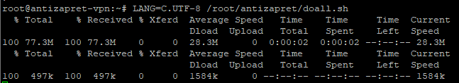

По какой-то причине некоторые поддомены не резольвятся вообще. Ярким примером в моем случае является поддомен lkfl2.nalog.ru, а также 3 поддомена на моем сайте, недавно добавленные через Cloudflare.
Ещё стоит упомянуть, что идентичная проблема возникала когда я добавил в include-hosts-custom.txt поддомен api.fast.com без основного fast.com: сразу же после отработки doall.sh api перестал резольвится вообще. Тогда мне помогло включение всего домена, однако делать это со всеми подобными сайтами мне не хочется (да и российские ресурсы это вряд ли полюбят)
Пробовал все нижеперечисленное, однако браузеры продолжают выдавать NXDOMAIN.
echo "cache.clear()" | socat - /run/knot-resolver/control/1
/root/antizapret/doall.sh
Одним из вариантов решения является установка третьего DNS сервера (благо кинетик позволяет), но тогда через некоторое время отваливаются заблокированные сайты т.е. тоже так себе. Может я что-то пропустил при установке контейнера?
Проверьте, резолвится ли домен с IP-адреса сервера:
dig +short nalog.ru @213.59.255.110
dig +short nalog.ru @46.61.230.203
Если нет, то проблема не в ПО, а в сетевой связности или блокировки со стороны серверов nalog.ru.
Всё зарезолвилось, IP выдало.
Да и опять же, дело явно не в nalog.ru, с новыми поддоменами на cloudflare и api.fast.com под антизапретом такая же проблема
Попробуйте после строки cache.min_ttl(120) в файле /etc/knot-resolver/kresd.conf добавить строку trust_anchors.remove('.'), это отключит DNSSEC.
Сбросьте кеш и перезапустите kresd.
О, действительно помогло. Теперь и ЛК nalog.ru загружается, и api.fast.com отдельно, спасибо
подскажите, как это сделать?
systemctl restart kresd@1
Спасибо!
после перезапуска кстати заметил, что раньше там где на скрине 77,3М было всего ~12

это значит что у меня что-то не работало?
Перестало  . Те ДНС сервера, что предоставили вы не выдают IP, однако из контейнера без указания доп серверов через @ всё резольвит и адрес ДНС показывает 8.8.8.8. Также не резольвило на хост машине, через systemd-resolved поменял ДНС на 1.1.1.1 и 8.8.8.8 и на ней также всё заработало, но под VPN антизапрета всё также not resolved. Отключение DNSSEC как в прошлый раз не помогло
. Те ДНС сервера, что предоставили вы не выдают IP, однако из контейнера без указания доп серверов через @ всё резольвит и адрес ДНС показывает 8.8.8.8. Также не резольвило на хост машине, через systemd-resolved поменял ДНС на 1.1.1.1 и 8.8.8.8 и на ней также всё заработало, но под VPN антизапрета всё также not resolved. Отключение DNSSEC как в прошлый раз не помогло
О каких DNS речь? Я вам ничего не предлагал, насколько вижу. В сообщении выше оригинальные NS домена, которые у вас, предположительно, недоступны.
Вам нужно что-то такое: